Madhav S Anoop
Aspiring Aerospace Engineer & Researcher • Senior at Round Rock High School • Class of 2027
Biomimetic Aerodynamic Research
2-year independent research adapting humpback whale tubercles to improve aircraft wings efficiency. Proved +47% L/D ratio in CFD simulation and achieved +12% flight range via custom fabricated UAV.
Aerodynamic Toolkit
Developed & deployed an open-source educational software toolkit to predict wing airflow separation, piloted with local robotics teams.
Destination Imagination International Competition
Competed in rigorous STEAM and fine arts challenges demanding complex engineering and collaboration.
HIGH SCHOOL AEROSPACE SCHOLARS (NASA)
NASA Moonshot Team Lead
Selected for a rigorous year-long NASA program. Led the Echo team to design a comprehensive human mission architecture to the Moon, presenting directly to a panel of NASA engineers.
Engineering Experience
Projects enriching my passion for aerospace and engineering
Independent Research projects
Conducted research for aircraft fuel efficiency improvement, paper published in JEI; named Top 12/330 at Sci Fair, securing awards and $6K scholarship
Independent Capstone project
Developed an open-source predictive aerodynamics software toolkit for aircraft wing efficiency, replacing costly hardware and simulation software; hosted workshops for XX users; refined via community feedback
UT Austin Research Assistant
Assisted UT Austin Professor at the Vertical Flight Lab on the research project for the US Dept of Navy; evaluated drone sensors & designed precise 3D models
Independent Research
Prototyping & Flight-Testing Biomimetic Wings to Optimize Aerodynamic Efficiency
With air travel emitting one billion tons of CO2 annually and transportation contributing ~28% of global emissions, developing efficient wing designs to reduce drag is critical for mitigating global warming. This two-phase study evaluated biomimetic wings inspired by eagles and humpback whales. In Phase 1, Computational Fluid Dynamics (CFD) and wind-tunnel testing on 10-inch half-wing models revealed that the whale-mimetic design improved the lift-to-drag ratio by up to 47% at a 5-degree angle of attack and 50 m/s airspeed; the eagle-inspired design showed inconsistent performance. Phase 2 scaled the whale-mimetic design to a 40.5-inch full-wing model. CFD simulations at 10 m/s and a 5-degree angle of attack showed a 12.2% improvement in the lift-to-drag ratio. Subsequent flight testing of a drone prototype demonstrated a 12% increase in flight distance per volt compared to conventional wings. These results suggest that whale-mimetic wings significantly enhance fuel efficiency and represent a promising advancement in reducing the environmental impact of aviation.
Computational Fluid Dynamics (CFD)
15,000 Computational Fluid Dynamics (CFD) simulation trials executed at airspeeds of 50 m/s, 100 m/s, and 240 m/s at angles of attack of 0, 5, and 10 degrees.
Custom-built Wind-tunnel Testing
A wind-tunnel was built and utilized for testing the best-performant whale-mimetic vs conventional aerofoil. Lift produced by the whale-mimetic aerofoil was compared against the lift produced by conventional cambered aerofoils.
Flight Testing & Telemetry Data
A commercial drone-sized prototype aircraft with a 40.5-inch wingspan was flown using the 3D printed conventional and whale-mimetic wings. This involved:
- Aircraft Fabrication and Assembly
- Circuit Development
- GPS Module Integration
- Data Logger Programming
- Flight testing
- Adapting aerodynamic features from nature, such as bird and whale anatomy, to enhance airplane wing design
- Humpback whale flipper tubercles reduce drag and improve the lift-to-drag ratio
- Eagle wingtip feathers minimize drag by breaking large vortices into smaller, less impactful ones
-
1Identify the optimal biomimetic wing design for improved aerodynamic efficiency
-
2Prototyping and Flight-Testing Biomimetic Wings: Empirical Performance Evaluation
3D Modeling & Computational Fluid Dynamics (CFD): Designed 10-inch half-wing models representing conventional Clark-Y, whale-mimetic, and eagle-mimetic configurations. Conducted over 200 CFD simulations across 15,000 trials, analyzing performance at varying airspeeds (50, 100, 240 m/s) and Angles of Attack (0°, 5°, 10°).
Wind Tunnel Construction & Empirical Testing: To validate computational models with physical data, a custom 2'x1.5'x1.5' wind tunnel was fabricated. The setup utilizes 280 six-inch PVC pipes arranged in a honeycomb formation to ensure laminar airflow at a controlled speed of 4 m/s.

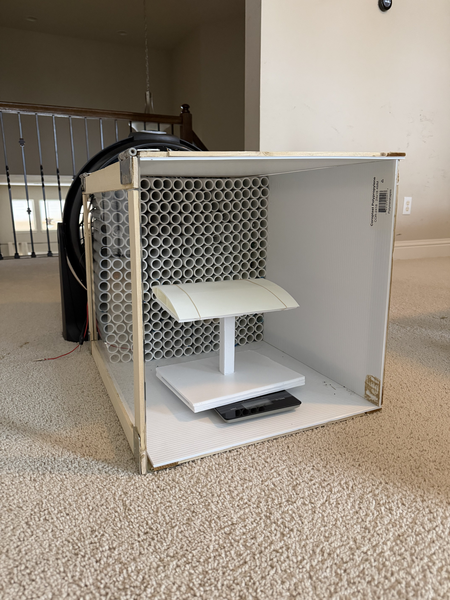
UAV Fabrication & 3D Prototyping: Transitioned from computational testing to physical validation by scaling the most efficient models to a 40.5-inch full wingspan. Fabricated custom aircraft platforms incorporating the whale-mimetic tubercles directly into the leading edge of the aerofoils for real-world environmental testing.
Flight Testing & Telemetry Tracking: Conducted rigorous field tests at operational speeds of ~10 m/s. Programmed and integrated a custom onboard data logger to precisely capture flight telemetry and power consumption. The physical flight data corroborated the CFD simulations, demonstrating a +12% increase in overall flight range (1802 meters/volt versus the 1596 meters/volt baseline).
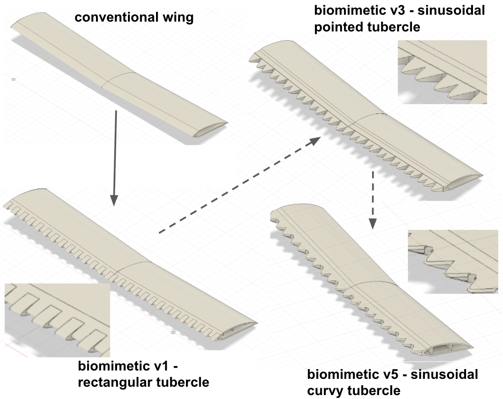
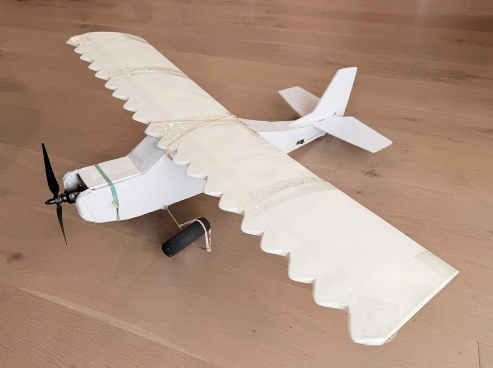
Aerodynamic Efficiency Gains: The computational fluid dynamics (CFD) analysis revealed substantial performance improvements for the biomimetic designs. At a baseline testing speed of 50 m/s and an Angle of Attack (AoA) of 5°, the whale-mimetic tubercle wing demonstrated a peak +47% increase in the Lift-to-Drag (L/D) ratio compared to the conventional Clark-Y aerofoil.
Delayed Flow Separation: Visual airflow trajectory models confirmed the mechanism behind this efficiency. The leading-edge tubercles acted as passive flow control devices, channeling the air into accelerated streams (vortices) over the wing surface. This energized the boundary layer, successfully mitigating turbulence and significantly delaying flow separation and aerodynamic stall at higher angles of attack.
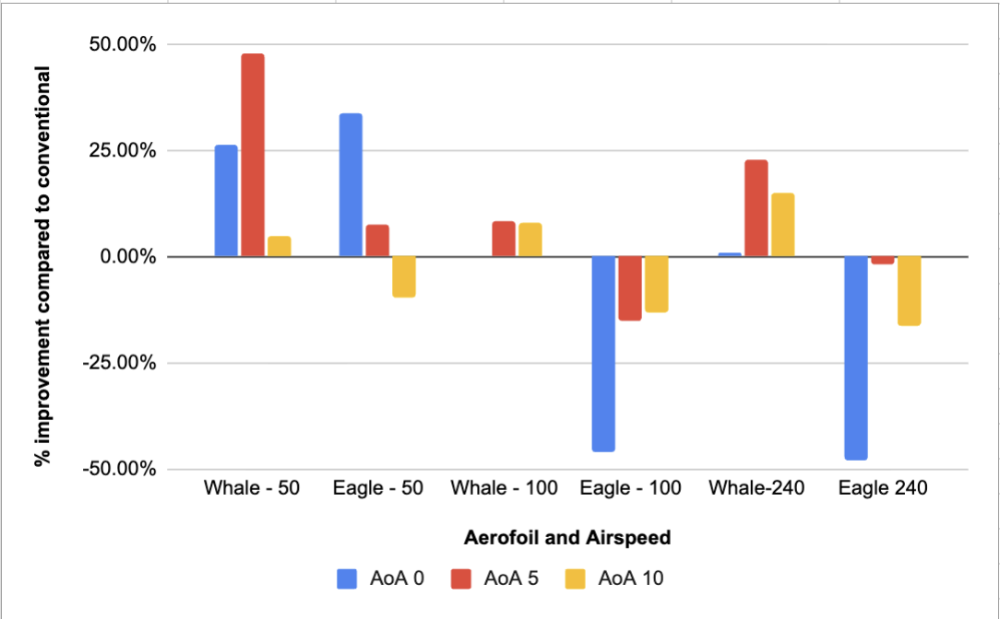
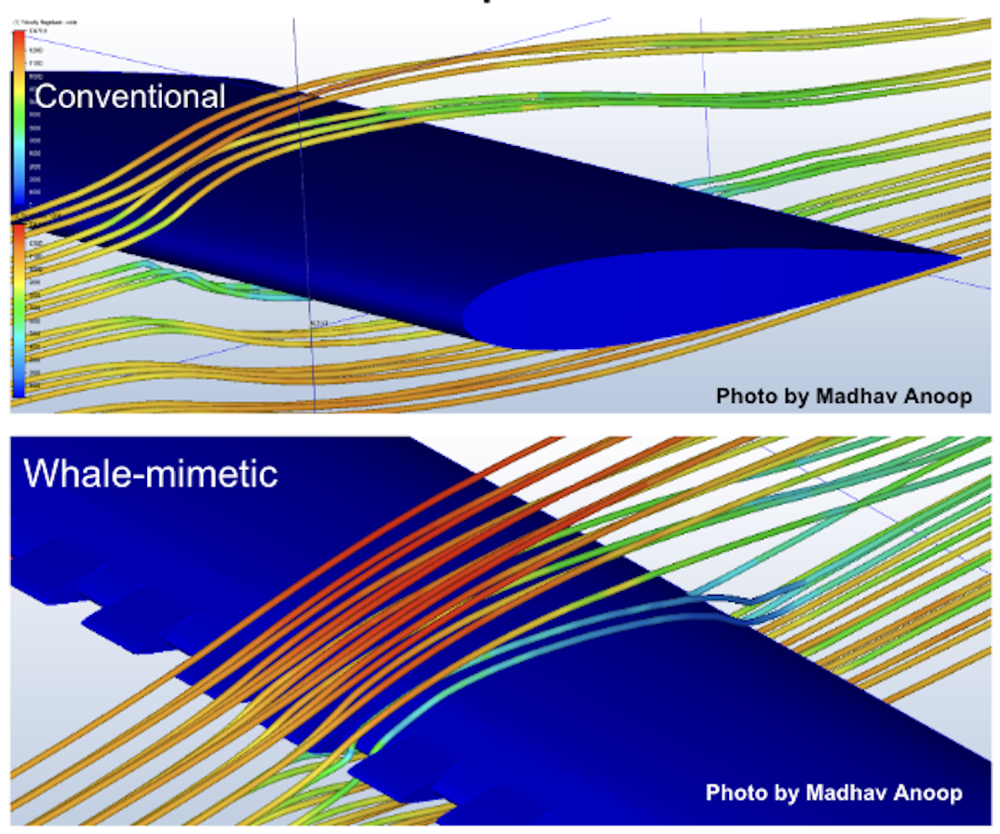
Full-Scale Aerodynamic Validation: Following the successful half-wing trials, the fully scaled 40.5-inch UAV wingspan was subjected to comprehensive CFD analysis. The simulation data confirmed that the biomimetic tubercles successfully scale to larger geometries, maintaining significant aerodynamic superiority over the baseline models under real-world operational flight conditions.
Statistical Performance Consistency: To ensure reliability, variance in the aerodynamic data was rigorously tracked across multiple trials. The resulting statistical boxplot illustrates a tightly clustered performance metric for the biomimetic design. This indicates not just an improvement in the peak lift-to-drag ratio, but a highly stable and consistent aerodynamic profile essential for reliable UAV field flights.
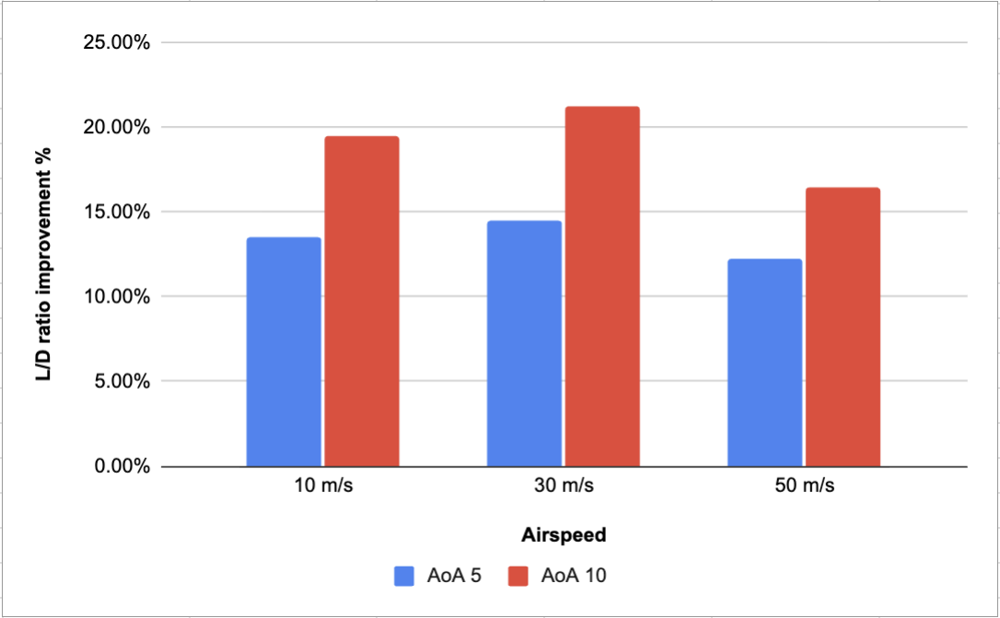
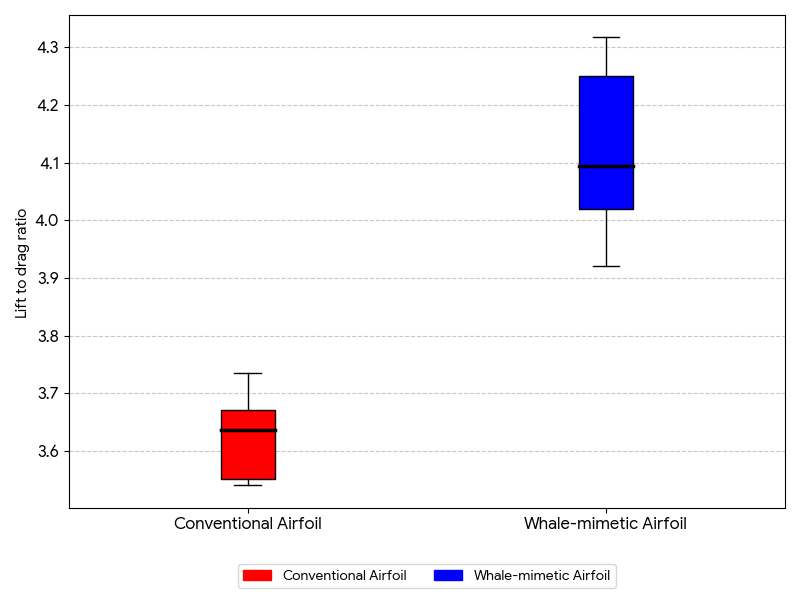
Custom Telemetry Integration: To capture precise empirical data during physical flight tests, a custom data acquisition circuit was engineered and integrated directly into the UAV payload. This system tracked real-time voltage, current, and GPS distance simultaneously, ensuring that performance metrics collected during the ~10 m/s field tests were accurate, bias-free, and perfectly synchronized.
Empirical Range Extension: The physical field tests successfully validated the computational projections. The UAV equipped with the whale-mimetic leading-edge tubercles achieved a verified flight efficiency of 1802 meters per volt, compared to the 1596 meters per volt baseline of the conventional wing. This translates to a definitive +12% real-world flight range extension, underscoring the practical viability of biomimetic structures for commercial aviation.
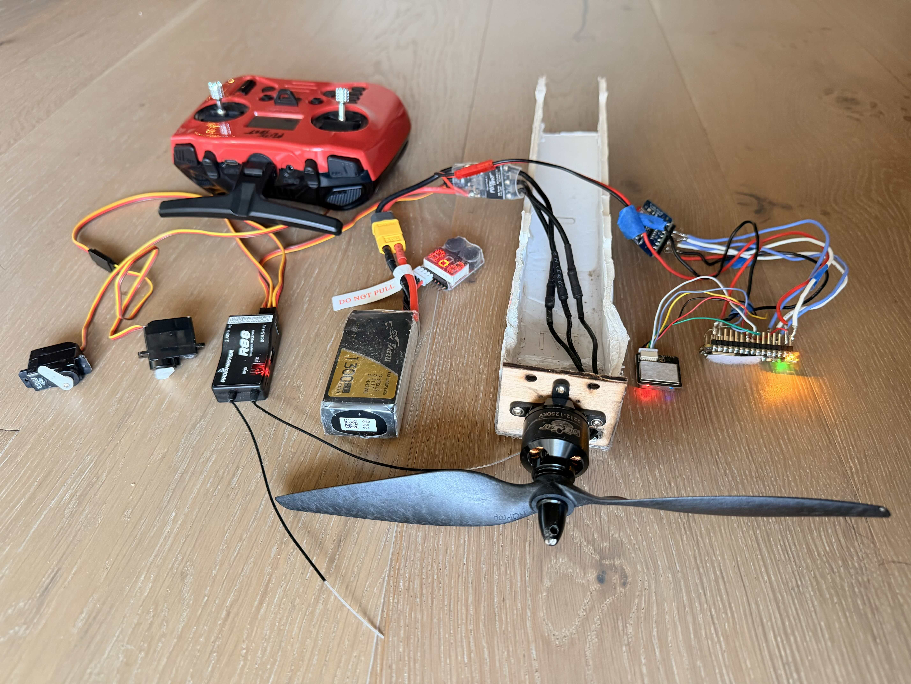
| Configuration | Scale | Condition | Metric Gain |
|---|---|---|---|
| CFD Simulation | 10-inch Half Wing | 50 m/s @ 5° AoA | +47% L/D Ratio |
| CFD Simulation | 40.5-inch Full Wing | 10 m/s @ 5° AoA | +12.2% L/D Ratio |
| Flight Testing | 40.5-inch Wingspan | 10 m/s Avg airspeed | +12% Meter/Volt |
-
The whale-mimetic wing performed better in all the 3 test scenarios.
-
At the same wing size and similar airspeed, the CFD simulation results and the flight test results were comparable.
- The whale-mimetic wing had higher lift-to-drag ratio compared to the control and eagle-mimetic wing
- Lift-to-drag ratio gain was most significant at lower airspeeds
- Lift-to-drag gain decreased with larger wing size
- Fuel efficiency gain observed in flight testing is proportional to the CFD lift-to-drag ratio gain
Improvements in fuel efficiency of commercial drone could result in:
- Extended drone range, mitigating current limitation for drone adoption
- Reduced energy consumption and CO₂ emissions
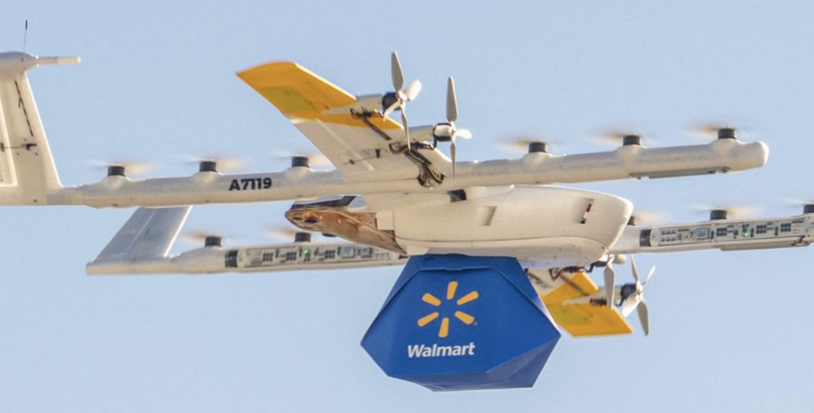
Increased adoption of UAVs through:
- Fewer base depots and expanded rural service area coverage
- Greater coverage for agricultural inspections
- Better loiter times and reduced fleet sizes for defense operations

Limitations
- Wind tunnel airspeeds were limited to ~4 m/s, preventing the replication of high-speed flight conditions.
- Physical drag could not be measured in the wind tunnel due to instrumentation constraints; only lift was recorded.
- Manual pilot control and slight environmental winds introduced natural variability during flight testing.
- Statistical analysis could not be conducted on flight test data due to a limited sample size of 20 flights exceeding 100 meters.
Mitigations
- Environmental and pilot variables were significantly mitigated by flying models back-to-back on the same days using the same battery pack.
- Flights less than 100 meters were removed to cleanse the data.
- Whale-mimetic wings significantly improve lift-to-drag ratios and overall fuel efficiency over conventional designs.
- Integrating these biomimetic structures into commercial UAVs tangibly extends their operational flight range.
- Increased range capabilities accelerate commercial UAV adoption, replacing high-emission delivery vehicles and reducing net greenhouse gas output.
- This approach represents a highly actionable step toward mitigating the broader environmental impact of the aviation and transportation sectors.
- "Learn about Aerodynamics." NASA Glenn Research Center, 7 Dec. 2023, www1.grc.nasa.gov/beginners-guide-to-aeronautics/learn-about-aerodynamics/#lift.
- Celli, Vittorio. "Boundary Layer Separation and Pressure Drag." University of Virginia, 28 Sept. 1997, galileo.phys.virginia.edu/classes/311/notes/fluids2/node11.html.
- Tucker, V. A. "Gliding Birds: Reduction of Induced Drag by Wing Tip Slots between the Primary Feathers." Journal of Experimental Biology, vol. 180, no. 1, 1993, pp. 285–310, journals.biologists.com/jeb/article-abstract/180/1/285/6536/Gliding-Birds-Reduction-of-Induced-Drag-by-Wing.
- Fish, F. E., and J. M. Battle. "Hydrodynamic Design of the Humpback Whale Flipper." Journal of Morphology, vol. 225, no. 1, 1995, pp. 51–60, doi.org/10.1002/jmor.1052250105.
- Miklosovic, D. S., et al. "Leading-Edge Tubercles Delay Stall on Humpback Whale (Megaptera novaeangliae) Flippers." Physics of Fluids, vol. 16, no. 5, 2004, pp. L39–L42, doi.org/10.1063/1.1688341.
- Stolaroff, J. K., et al. "Energy Use and Life Cycle Greenhouse Gas Emissions of Drones for Commercial Package Delivery." Nature Communications, vol. 9, no. 1, 2018, article no. 409, doi.org/10.1038/s41467-017-02411-5.
Ion vs. Chemical Propulsion Study
In Freshman year, conducted a comparative study evaluating propulsion systems in modern spacecraft. Analyzed specific limitations, thrust-to-weight ratios, and long-term deep space benefits of each methodology.
Independent Capstone project
Open-source Aerodynamic Screening and Educational Toolkit
Built a community-facing open-source aerodynamics toolkit centered on a lightweight predictive machine learning software tool to help robotics teams/makerspaces/beginner engineering groups/Students explore aerodynamic behavior in a matter of seconds without needing expensive software or specialized hardware. This toolkit will make the aerofoil wing design iterations faster, cheaper and highly accessible to the aerospace community.
Research Assistant
UT Austin research project for the US Dept of Navy
Build a special purpose drone for US Dept of Navy to enable ship inspection. The special requirements include extended range, advanced drone collision avoidance.
Assisted Professor Dr. Jayant Sirohi and a PhD student starting from my junior year, taking on the following responsibilities:
- Designed precise 3D models of test harnesses for experimental setups.
- Conducted 400+ rigorous tests across multiple distance sensors—including the Sparkfun Qwiic Time of Flight (ToF), Adafruit ToF, and an Ultrasonic High Performance Range Finder—to critically evaluate accuracy, latency, and error margins for semi-autonomous navigation.
Following the testing phase, I performed comprehensive data analysis and generated visual representations to identify the most effective sensor for our specific flight requirements. These results are currently under review with Dr. Sirohi and my faculty mentor to determine the next developmental steps for the drone.
Beyond the technical deliverables, this role has been an immense catalyst for my personal and academic growth. It has provided me with direct, hands-on exposure to professional-level research standards and disciplined testing processes within a top-tier university laboratory environment.
Destination Imagination
Combining Engineering, Art, and Teamwork on a Global Stage
The Ascent of the Thought-Tree
A huge sigh of relief washed over me as our colorful "thought-tree" finally rose into the air. As it reached the peak of its ascent, the circular leaves—embedded with custom LED strips—automatically lit up the room in a rainbow of colors. Attached to each leaf was a tag representing a core value of humanity: creativity, honesty, bravery, and kindness. While most teams at the competition built standard jigsaw puzzles, my team decided to build a "growing puzzle tree". We wanted the different branches to represent life abstracts, turning our project into a "tree of humanity".
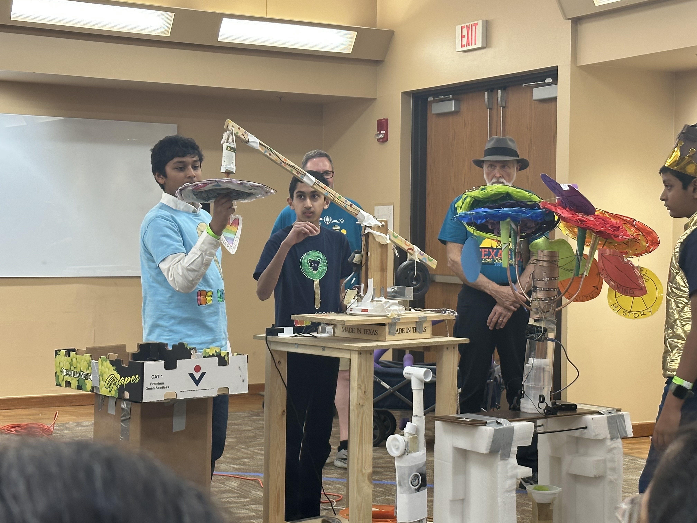
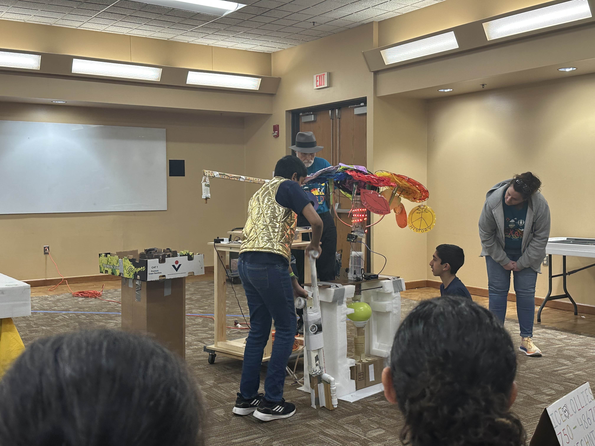
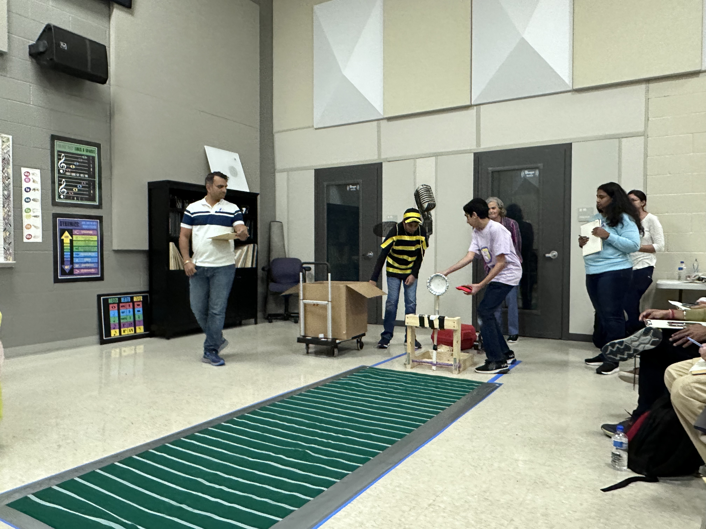
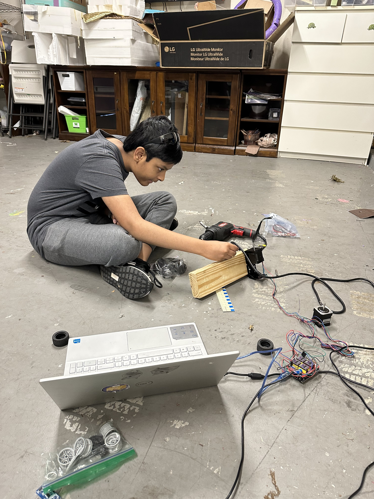
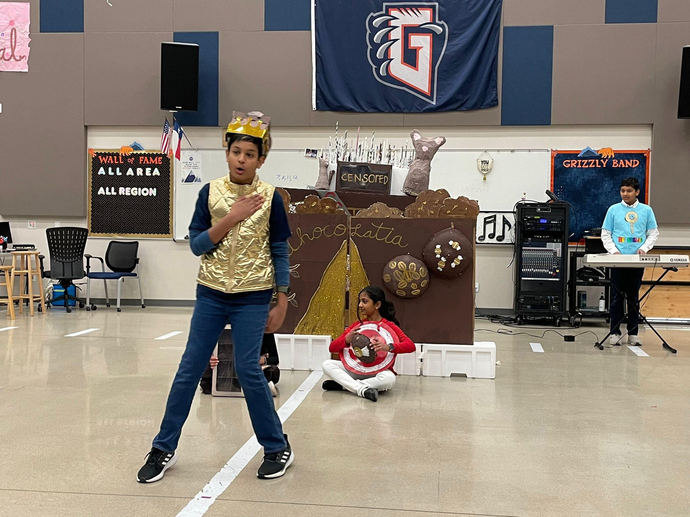
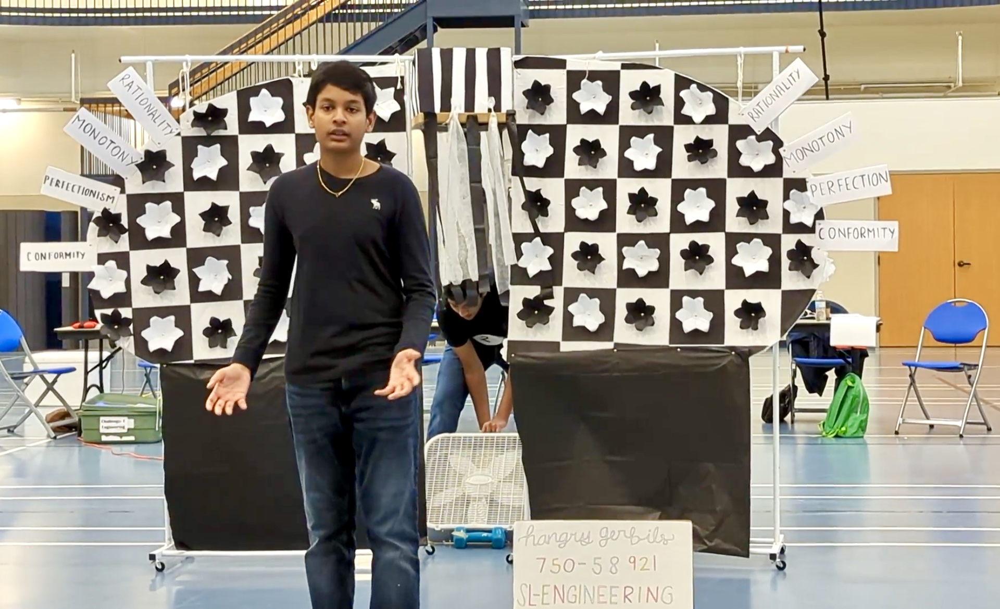
Engineering Behind the Art
This was all part of Destination Imagination (DI), a STEAM competition where teams are given a massive challenge and have to use a mix of STEM, fine arts, and teamwork to build a solution and present it through a live skit. That year, our task was to build a puzzle solver robot that could solve a chosen puzzle using technical methods. I co-led the design and development of the technical side, working alongside friends who were just as obsessed with engineering and science as I was.
Bringing our story to life meant dividing up the work based on what we were good at, from writing the script to building the actual props. One of my friends was amazing at electrical engineering and circuitry, while another was a woodworking expert. Even though I was a key player in the overall technical build, I had my own learning curves. I seriously struggled with precisely cutting wood blocks and attaching them together with L-brackets. My teammate was patient enough to teach me, and in return, I taught them how to use the Arduino IDE to program our crane's controls. To make the mechanism work, we built an electromagnetic crane using programmed motors and switches, alongside a custom electromagnet to place the puzzle pieces. Then, to actually make the tree "grow," we built a pneumatic pump and piston system using hydraulics to lift the entire heavy structure up by six inches.
Precision Bean bag launcher
For another year's competition, the requirement was to build a beanbag launcher that could hit an exact distance with repeatable precision. We pooled our engineering skills and worked as a tight unit to design and calibrate a custom thrower mechanism. Our main goal was consistency, which meant analyzing launch angles and spring tension until the device worked like clockwork. After hours of fine-tuning the math and hardware, we got the launcher to a point where it could reliably and accurately fire a single beanbag right into a target zone between 280 and 300 centimeters away.
A Global Triumph
Watching our masterpiece actually work and amaze the audience and judges made me smile, knowing that months of research, trial-and-error, and pure determination were going to pay off. The teamwork skills I built during that DI season have been invaluable ever since, whether I'm working on a regular group project at school or collaborating with PhD students at the UT Austin aerospace lab.
Our team went on to be incredibly successful, ultimately winning the first-place trophy at the global competition twice—once in the middle school division and again in high school. Along the way, we were honored with both the DaVinci Award and the Renaissance Award, special recognitions reserved for teams that display exceptionally unique solutions, courageous risk-taking, and outstanding creativity.
Standing on top of a global stage that featured over 600 teams from 13 different countries was completely exhilarating. It wasn't just because we successfully combined art and engineering, but because we got to fail, learn, and succeed together as close friends.
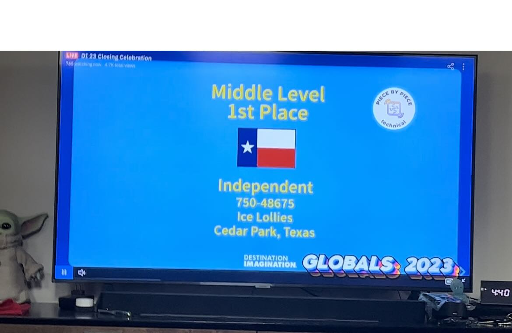
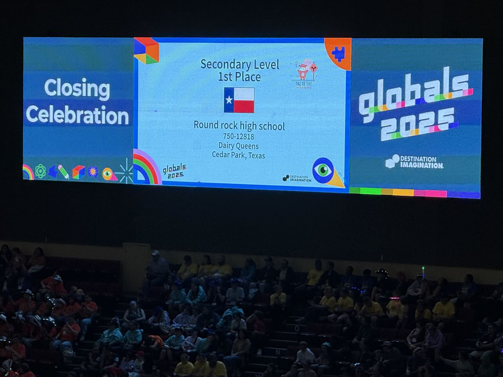
My Aerospace Journey
From childhood wonder to real-world engineering.
The Spark
That night, the moon wasn’t the bright white I knew it to be; it was blood-red, and I had to know why. As a kindergartner, I couldn’t grasp how something in the sky could change so drastically overnight. When I learned about the mechanics of a lunar eclipse the next day, it felt like a door had unlocked.
Realizing there was an entire universe past our planet waiting to be understood changed everything for me. Ever since, I’ve been completely hooked on the mysteries of space.
When I got my first telescope at the age of six, I spent countless evenings in the backyard observing the craters of the Moon, searching for Mars, and charting the stars. Naturally, this deep-seated obsession began to spill over into every part of my childhood—from astronaut Halloween costumes and towering Lego rockets to a Mars-themed birthday cake.
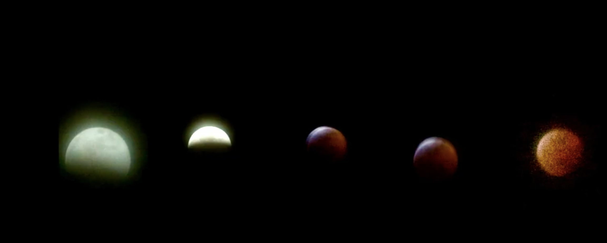
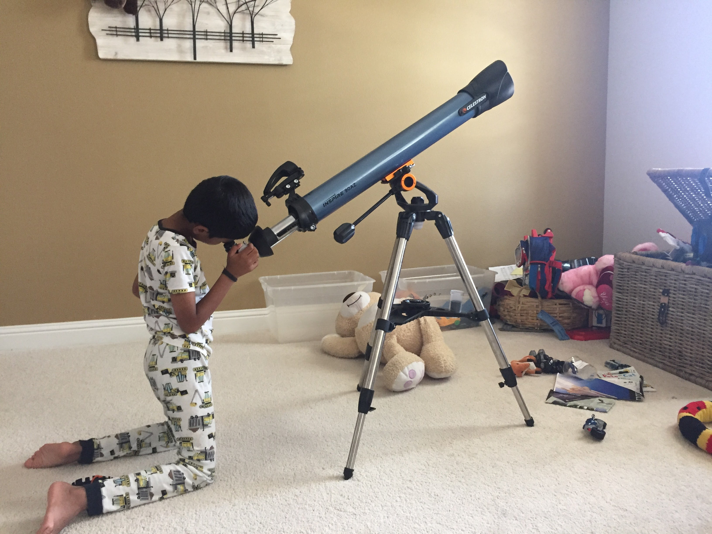

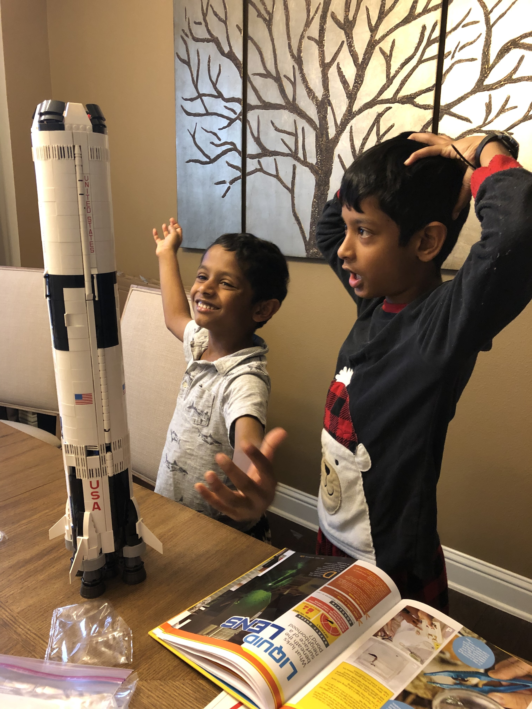
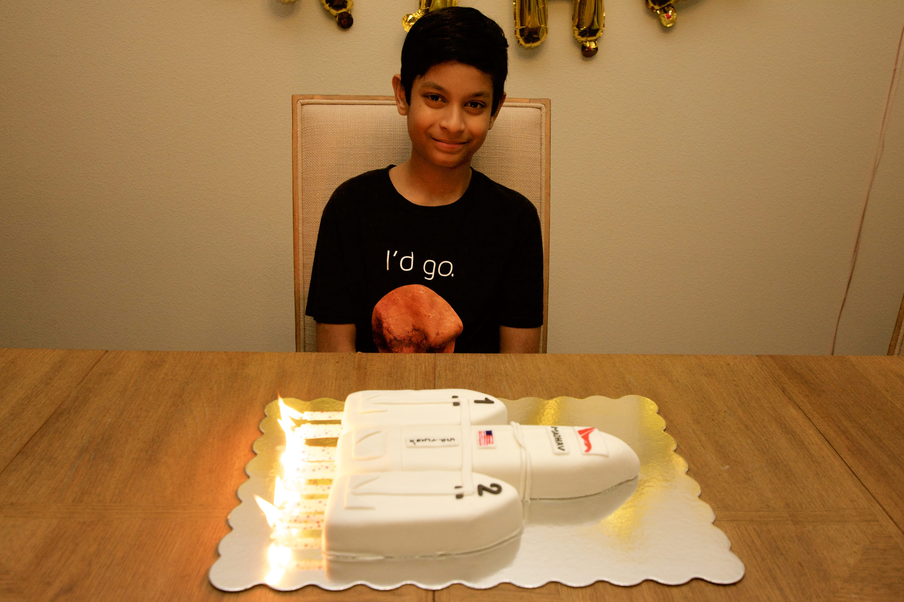
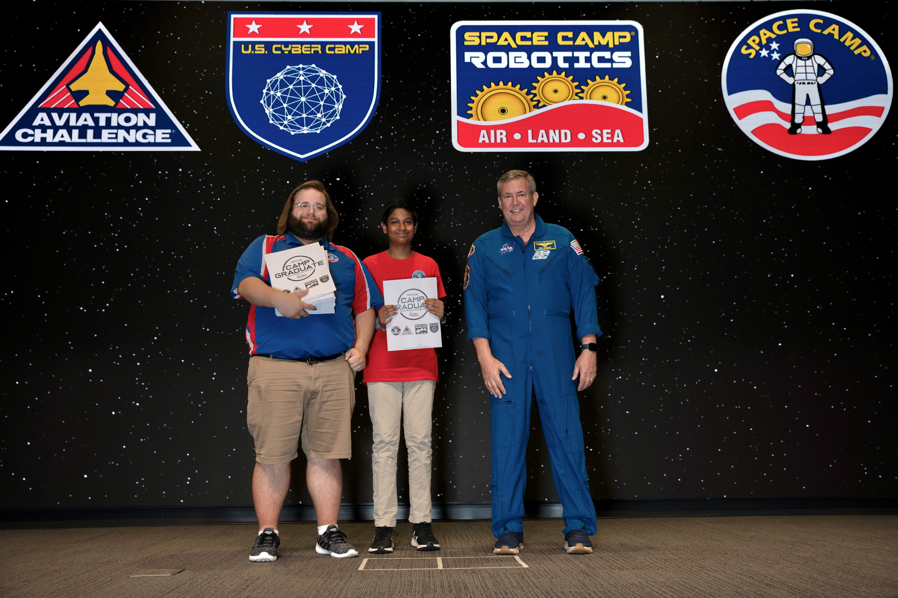
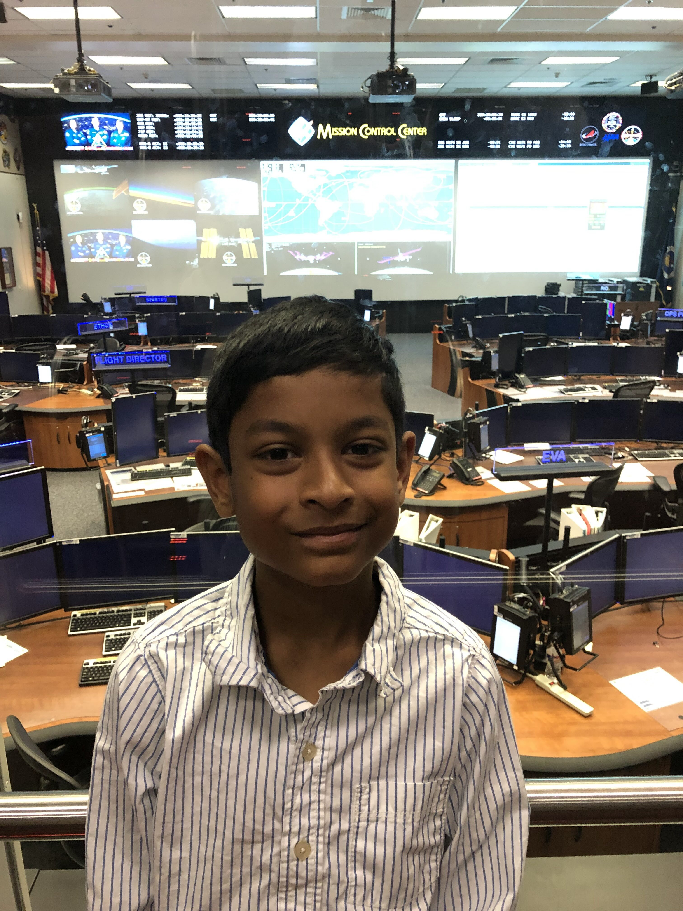
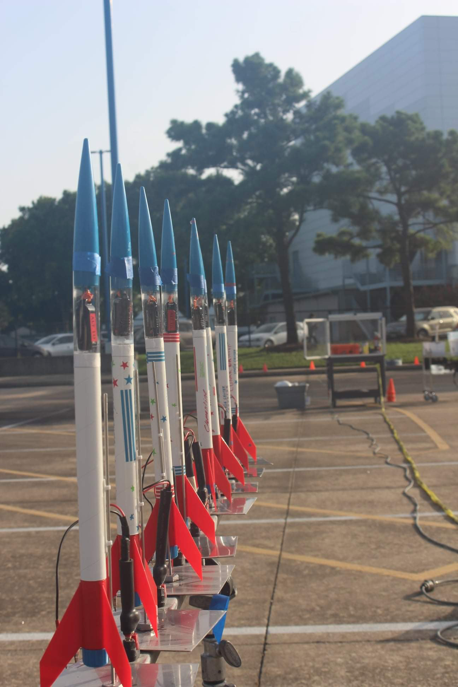
Problem Solving & Space Camps
As I grew older, that passive wonder evolved into a desire to actually solve problems. This shift started at a NASA summer camp where I found myself designing simulated lunar bases and programming rovers. I loved it so much that I later returned as an assistant counselor to help spark that same excitement in younger kids.
Years later, I found myself standing as the flight director in a Space Shuttle simulator at the U.S. Space & Rocket Center. Staring at my monitor during a high-stakes scenario, I blurted out, “Whoa! Why are the payload bay doors closed?” Ordering CAPCOM to open them was a split-second decision that averted a simulated collision. Guiding my ten-person mission control team through those frantic moments left me with a clear, concrete ambition: one day, I want to help guide humanity’s real steps onto Mars.
Engineering the Future
I’m drawn to aerospace engineering because it does two things at once: it pushes the absolute limits of human endurance, and it creates a trickle-down effect of everyday innovations on Earth. But I also know that getting there requires solving massive hurdles first—like the immense weight and cost of fuel needed to break gravity compared to the relatively weak thrust of current chemical engines. Later, inspired by how effortlessly marine life moves through water, I taught myself 3D modeling and Computational Fluid Dynamics (CFD) to explore biomimicry in flight. I designed aircraft wings modeled after the unique tubercles of a humpback whale and built a prototype remote-controlled plane to test the geometry in the real world. Seeing a 12% improvement in flight range was an incredible feeling—proof that looking to nature could dramatically cut drag and improve fuel efficiency.
Lately, I've been eager to push my boundaries even further. I currently assist a professor at the University of Texas at Austin's aerospace department on a project for the U.S. Department of the Navy, which has been an incredible opportunity to learn advanced aerodynamics directly from experts. Balancing my time in the lab with my high school aerospace coursework and NASA’s High School Aerospace Scholars program has been a whirlwind, but it’s continually grounding my technical foundation in real-world engineering.
Aerospace engineering has this amazing capacity to redefine what is humanly possible. I look forward to entering college to figure out my exact specialization, collaborate with peers who are just as obsessed with flight as I am, and dive into original research. Driven by the very same curiosity I felt as a kid looking up at a red moon, I'm ready to dedicate my college years to solving the complexities of spaceflight and helping make life beyond our planet a reality.
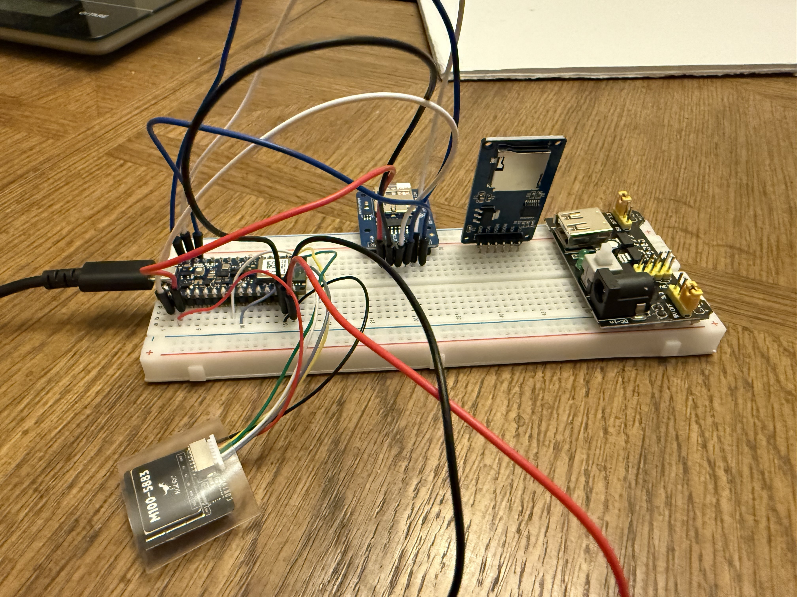
High School Aerospace Scholars (NASA)
NASA Moonshot Team Lead
Selected for a highly competitive program and successfully completed a rigorous 5-month, 12-module NASA academic curriculum focused on Earth science, space exploration, and advanced aeronautics.
- Qualified for the intensive, week-long Moonshot program by earning an A+ during the academic phase.
- Led the Echo team as Systems Engineer to design and plan a comprehensive, Artemis-themed mission architecture to the Moon and Mars.
- Presented our final mission design and technical blueprints directly to a panel of expert NASA engineers.
My music journey
People find all kinds of ways to express themselves—some paint, some write, but for me, it’s always been the piano. I’ve been taking lessons since first grade, and sitting down at the keys has become my favorite way to clear my head and just unwind. Over the last four years, I’ve also found a way to use my music to help out others, sharing my practice videos to support fundraisers at my music school for the National Pediatric Cancer Foundation. I’ve performed at over thirty recitals, community events, and local retirement homes, trying to bring a little bit of comfort wherever I can. Still, nothing really prepared me for the moment I walked onto the stage at the John F. Kennedy Center in Washington, D.C. Walking out completely solo in front of five hundred people was honestly terrifying, but looking out at the audience after the final chord faded was one of the most rewarding feelings I’ve ever had.
Early Beginnings
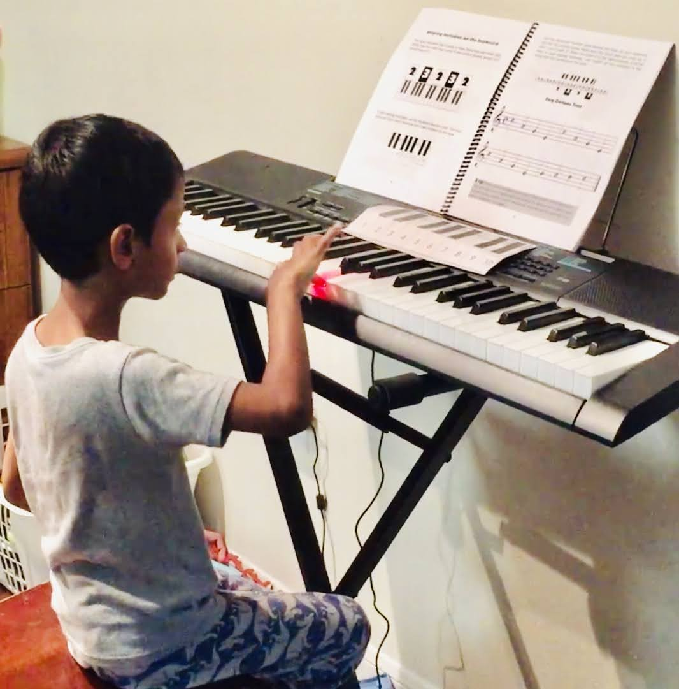
Where it all began: Discovering the keys and taking my first piano lessons at age 6.
Developing Technique
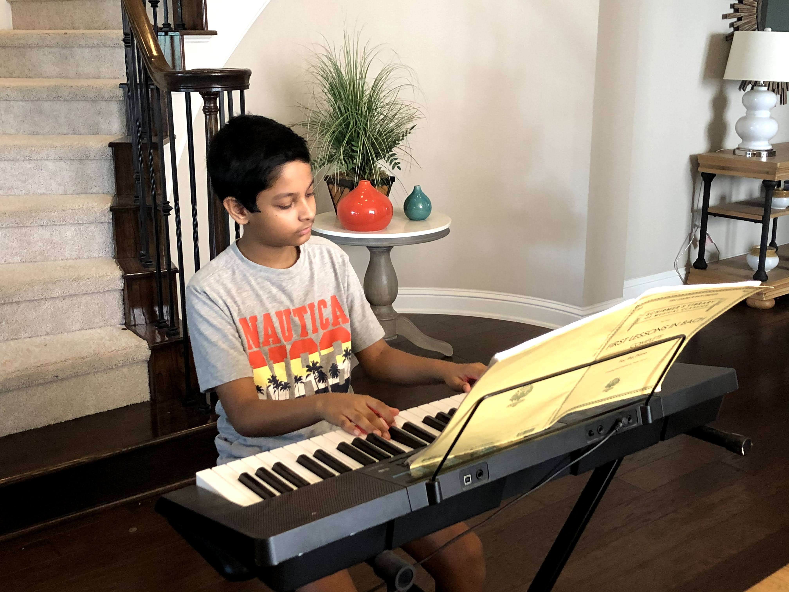
Building foundational technique, focus, and a growing passion for musical performance at age 8.
Expanding Repertoire
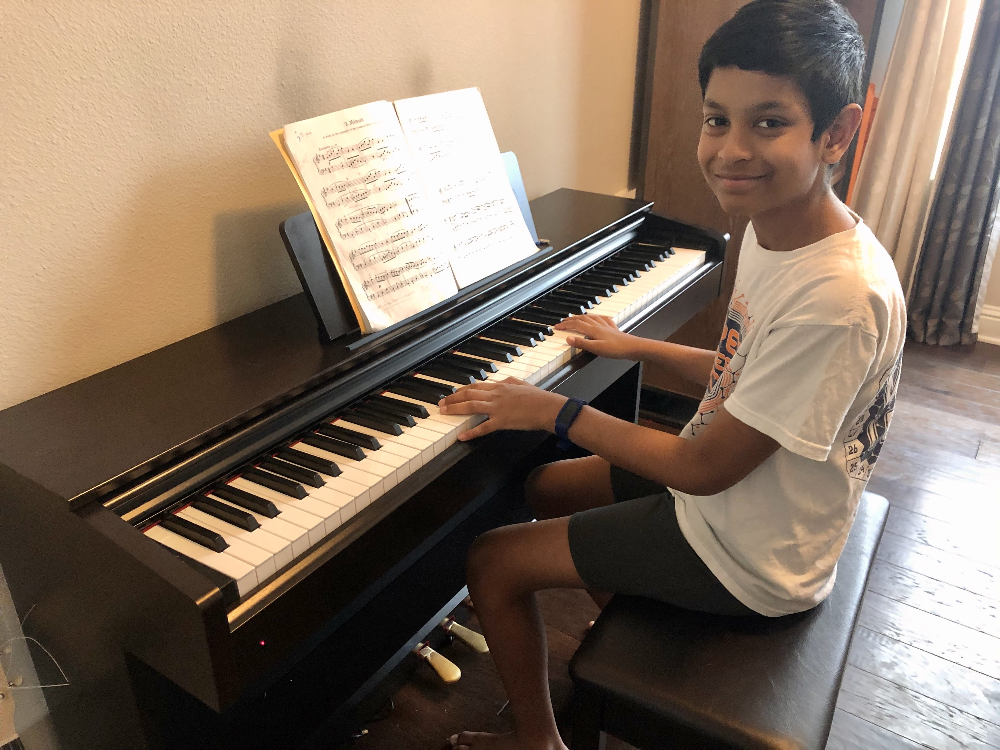
Advancing to complex repertoire and celebrating the journey with new milestones at age 12.
Kennedy Center Debut
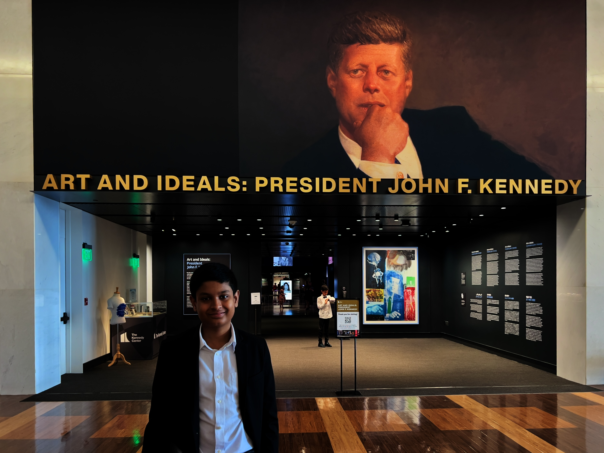
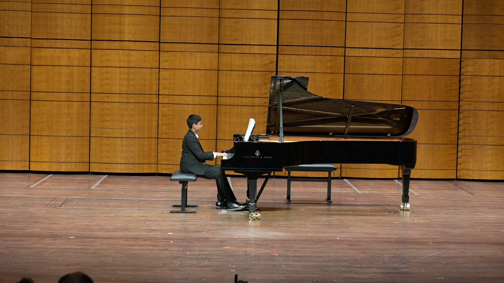
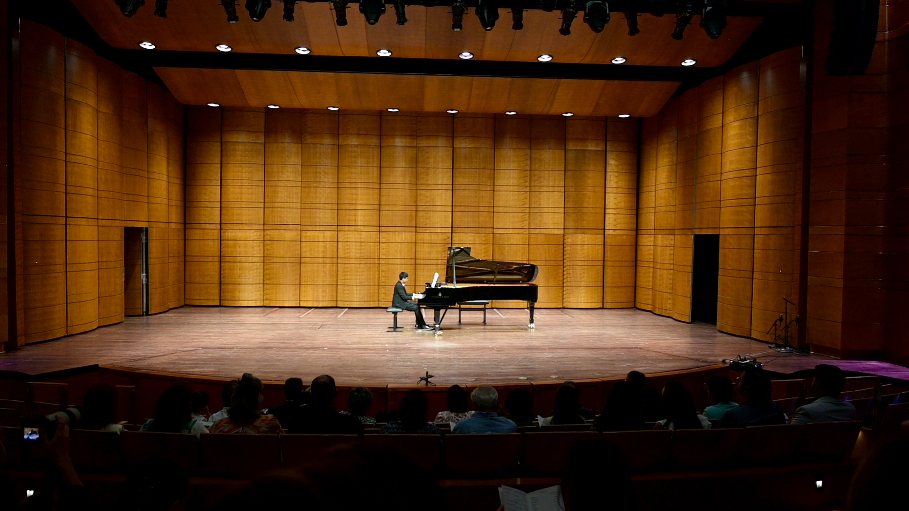
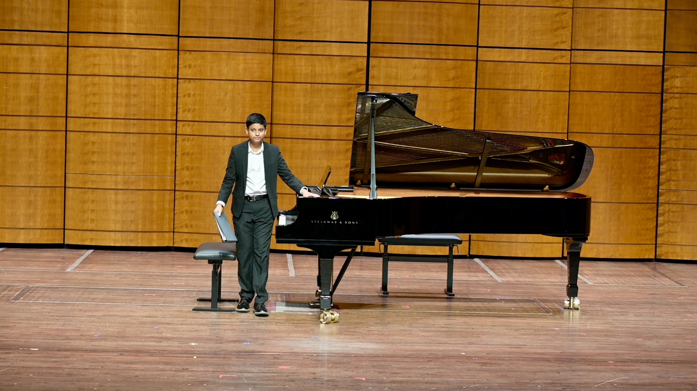
A major milestone: performing a solo piece center stage at the prestigious Kennedy Center in Washington D.C.
Paramount Theatre
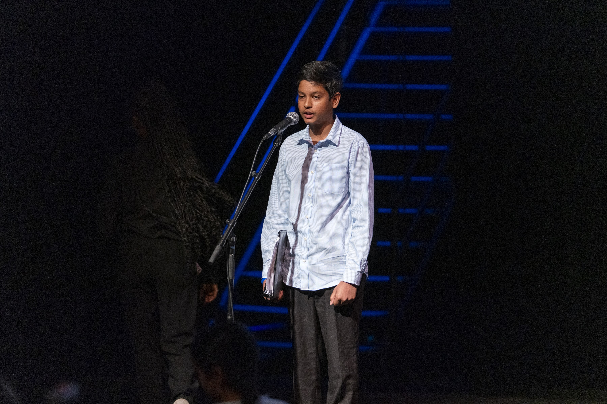
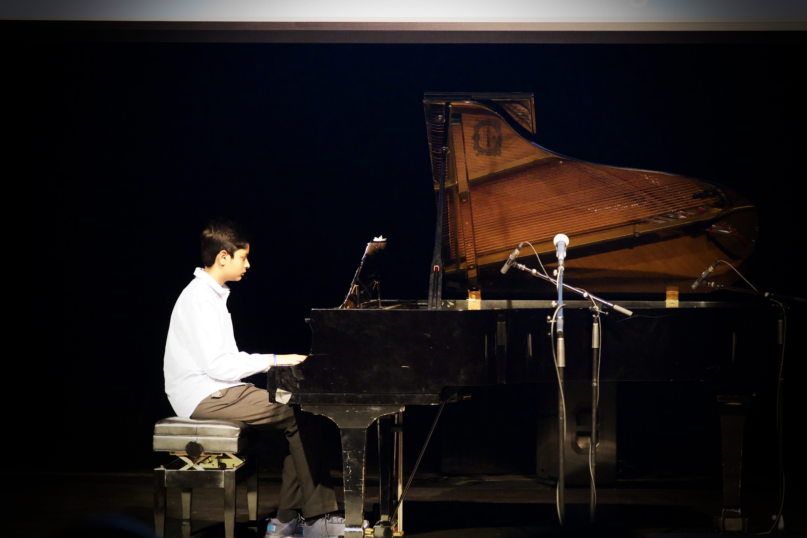
Live solo piano performance for the Austin community at the historic Paramount Theatre in Texas.
ABRSM Level 7 Achievement
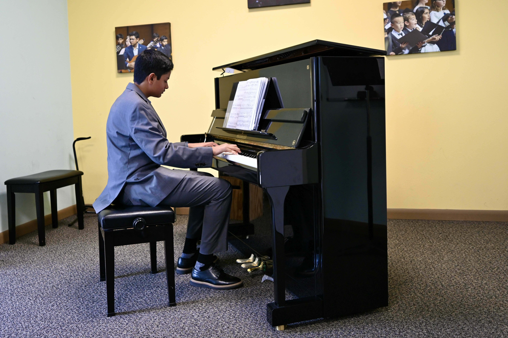

Progressing through the rigorous ABRSM curriculum to Level 7, and celebrating competitive milestones.
Summer Concert Series


Taking the stage at renowned venues during the summer concert series, mastering advanced compositions.
Experience & Education
My academic journey and practical engineering collaborations.
Conference Presenter
International Research Conference for Children (IRCC '26)
Presented independent biomimicry research to an international audience. Shared comprehensive empirical data from wind tunnel tests, CFD simulations, and physical UAV flights demonstrating applications for commercial drone fleets.
Research Collaboration
Vertical Flight Lab, UT Austin
Expanded practical experience by collaborating with researchers in the Aerospace Engineering Department. Gained exposure to university-level research methodologies, advanced aerodynamics, and rigorous academic testing.
University-Level Coursework
Stanford Pre-Collegiate Mathematics
Successfully completed highly rigorous university-level mathematics courses, including Number Theory and Linear Algebra. Earned Stanford Continuing Studies Credit.
Simulated Flight Director
U.S. Space & Rocket Center
Immersive 40-hour/week STEM experience. Directed simulated space missions, managing high-pressure scenarios and leading a team through complex operational protocols requiring rapid decision-making.
Awards & Honors
Recognized for academic excellence and engineering design.
August 2026
National Merit Scholarship Semifinalist
Recognized for outstanding academic achievement based on a qualifying NMSQT index score of 226.
2025 & 2026
Top Science & Engineering Fair Awards
2x 1st Place at Greater Austin Regional, $2500 SpaceX Scholarship at Texas State Science Fair, US Air Force Award, and $3000 Smith & Dawson Award.
May 2024 & 2025
Destination Imagination Global Winner
2x 1st Place winner at the International STEAM competition. Recipient of the DaVinci and Renaissance Special Awards.
June 2026
Best Research Presentation
Awarded at the International Research Conference for Children (IRCC) for independent research on Biomimicry.